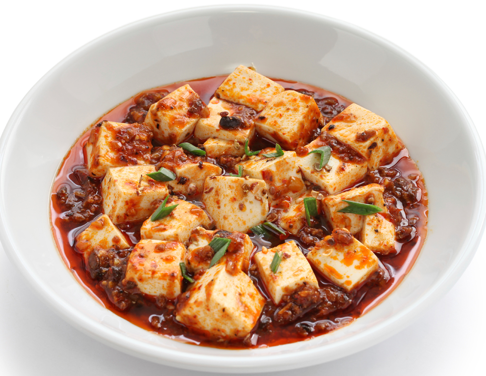
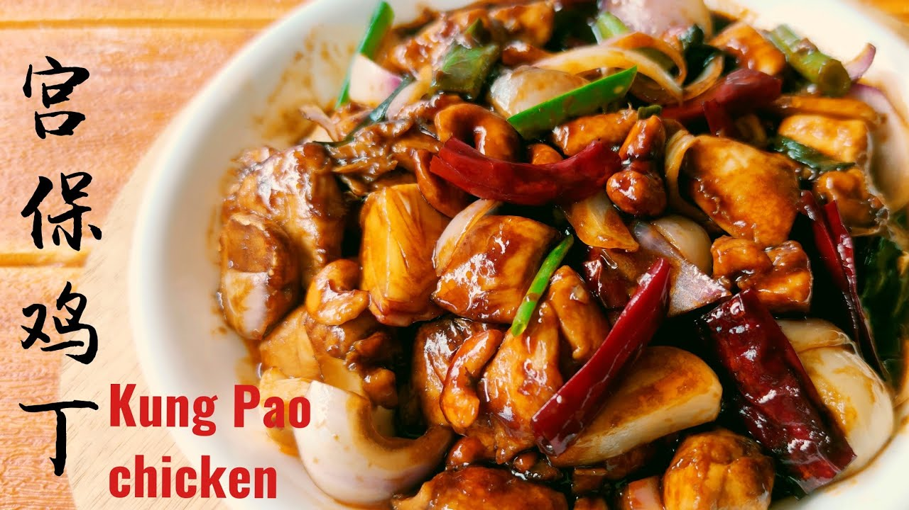
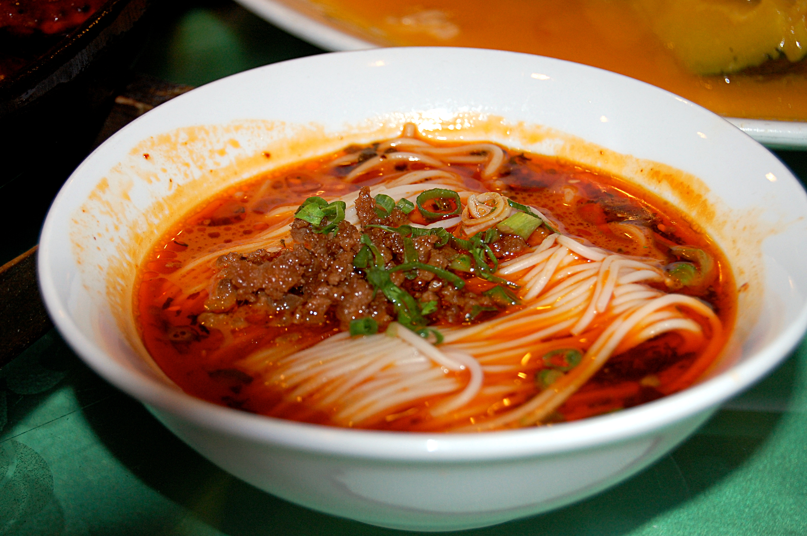

Mapo Tofu is Sichuan’s most famous dish—silky soft tofu in a spicy, numbing sauce made with “doubanjiang” (broad bean paste), chili oil, and “tianmianjiang” (fermented soybean paste). It was invented in the late 19th century by “A-Po” (Granny Chen), a Chengdu cook, and gets its name from “ma” (numbing, from Sichuan peppercorns) and “po” (granny). The perfect Mapo Tofu has a balance of spicy, numbing, salty, and slightly sweet flavors, with tender tofu that doesn’t break apart and a sauce that clings to every cube. It’s usually served with steamed rice—so you can soak up every drop of sauce.
Tofu: Silky, soft, and absorbent—soaks up the sauce’s flavors.
Sauce: Spicy (from chili oil), numbing (from Sichuan peppercorns), salty (from bean paste), with a hint of sweetness.
Texture: Contrasts between soft tofu and small bits of ground pork (optional) or green onions.
Overall:Bold and addictive—classic Sichuan “ma la” flavor.
1. Prep Ingredients: Cut 500g soft tofu into 2cm cubes; soak in warm water with 1 tsp salt for 10 minutes (to firm up). Mince 100g ground pork (or beef), chop 2 green onions, and grind 1 tbsp Sichuan peppercorns.
2. Make the Sauce: Heat 2 tbsp vegetable oil in a wok over medium heat. Add the ground pork and stir-fry until browned (3 minutes). Add 1 tbsp doubanjiang and 1 tsp tianmianjiang; stir-fry for 1 minute until fragrant. Pour in 150ml water or chicken broth.
3. Cook the Tofu: Add the tofu cubes to the wok; gently stir to coat with sauce. Simmer for 5 minutes (don’t stir too hard—tofu will break). Mix 1 tsp cornstarch with 2 tbsp water; pour into the wok to thicken the sauce.
4. Finish & Serve: Turn off the heat. Add the ground Sichuan peppercorns and chopped green onions. Drizzle with 1 tbsp chili oil. Serve hot with steamed rice.
Local Restaurants: 28–48 CNY/serving (with or without ground pork).
Famous Sichuan Restaurants (e.g., “Lai Weixian”): 58–78 CNY/serving (uses premium tofu and homemade bean paste).

Kung Pao Chicken is a global favorite, but the authentic version from Chengdu is a far cry from Western adaptations. It’s made with tender diced chicken, crispy roasted peanuts, dried chili peppers, and leeks—stir-fried in a sweet-savory sauce with soy sauce and rice wine. The key is balance: the chicken is tender (not overcooked), the peanuts are crispy (not soggy), and the sauce is spicy-sweet (not too sticky). It was named after Ding Baozhen (1820–1886), a Qing Dynasty official with the title “Gongbao” (Palace Guardian), who loved this dish. In Chengdu, it’s served as a main course or a “xiaochi” (snack) with beer.
Chicken: Tender, juicy, and seasoned with soy sauce—no dry, tough bits.
Peanuts: Crispy, salty, and add a crunch that contrasts with the soft chicken.
Sauce: Sweet-savory with a mild spicy kick from dried chilies; not too thick.
Overall:Balanced and flavorful—great for those who want Sichuan flavor without extreme heat.
1. Prep Ingredients: Dice 300g boneless chicken breast into 1cm cubes. Marinate in 1 tbsp light soy sauce, 1 tsp rice wine, and 1 tsp cornstarch for 15 minutes. Roast 50g peanuts (unsalted) until crispy; set aside. Slice 2 leeks into 1cm pieces; prepare 5 dried chili peppers.
2. Stir-Fry the Chicken: Heat 2 tbsp vegetable oil in a wok over high heat. Add the marinated chicken and stir-fry until just cooked (2–3 minutes); remove from the wok.
3. Cook Aromatics & Sauce: In the same wok, add 1 tbsp oil. Add the dried chili peppers and 1 tsp Sichuan peppercorns; stir-fry for 30 seconds until fragrant (don’t burn the chilies). Add the leek slices and stir-fry for 1 minute until soft.
4. Combine & Finish: Return the chicken to the wok. Mix 1 tbsp light soy sauce, 1 tsp sugar, 1 tsp rice vinegar, and ½ tsp cornstarch in a small bowl to make the sauce. Pour the sauce over the chicken and vegetables, stir-fry for 1 minute until the sauce thickens. Add the roasted peanuts and toss gently to coat.
5. Serve: Transfer to a plate and serve hot—best with steamed rice or as a side with beer.
Local Eateries: 38–58 CNY/serving (generous portion with plenty of chicken and peanuts).
High-end Sichuan Restaurants: 68–88 CNY/serving (uses free-range chicken and premium peanuts).
Street Food Stalls (Kuanzhai Alleys): 25–35 CNY/small portion (great for a quick snack).

Dan Dan Noodles are a classic Chengdu street food—thin, chewy wheat noodles tossed in a spicy, savory sauce, topped with minced pork, preserved vegetables, and green onions. The name comes from “dan dan” (meaning “carry pole”)—historically, vendors carried the noodles and sauce in two baskets on a pole, selling them door-to-door. Chengdu’s version is “dry” (no broth) or “soup-based,” but the dry style is more iconic: the sauce is made with chili oil, Sichuan peppercorns, soy sauce, and sesame paste, creating a rich, numbing-spicy flavor that clings to every noodle. It’s a hearty, affordable snack—locals eat it for breakfast, lunch, or a late-night bite.
Noodles: Thin, chewy, and slightly elastic—perfect for holding the thick sauce.
Sauce: Spicy (from chili oil), numbing (from Sichuan peppercorns), salty-savory (from soy sauce), with a creamy hint from sesame paste.
Toppings: Minced pork adds savoriness, preserved vegetables add tangy crunch, and green onions add freshness.
Overall: Bold and satisfying—packs a flavor punch in every bite.
1. Prep the Sauce: In a large bowl, mix 2 tbsp chili oil, 1 tbsp light soy sauce, 1 tbsp dark soy sauce, 1 tbsp sesame paste, 1 tsp Sichuan peppercorn powder, ½ tsp sugar, and 1 tbsp rice vinegar. Stir until smooth.
2. Cook the Toppings: Heat 1 tbsp vegetable oil in a pan over medium heat. Add 100g minced pork and stir-fry until browned (3 minutes). Add 1 tbsp preserved vegetables (diced) and stir-fry for 1 minute; set aside.
3. Cook the Noodles: Bring a pot of water to a boil. Add 200g dry wheat noodles and cook for 4–5 minutes (follow package instructions). Drain the noodles and add them to the sauce bowl.
4. Assemble: Top the noodles with the minced pork mixture, chopped green onions, and a sprinkle of sesame seeds (optional). Toss well to coat the noodles in the sauce. Serve hot.
Street Stalls: 8–12 CNY/bowl (basic dry version with all toppings).
Local Noodle Shops: 15–20 CNY/bowl (larger portion, with extra pork or a side of pickled vegetables).
Kuanzhai Alleys/Jinli Street: 18–25 CNY/bowl (tourist-friendly portions, often served in traditional bowls).